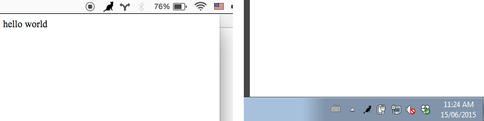
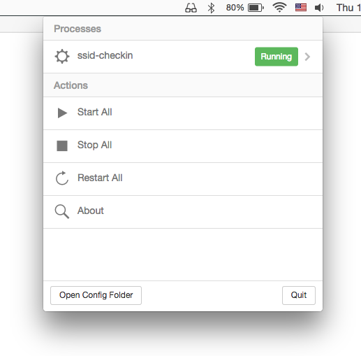

Electron Fundamentals
A quick intro to Electron, a desktop application runtime.
Electron is an open source project written by Cheng Zhao AKA zcbenz, an engineer who works for GitHub in Beijing on the Atom text editor team. It combines Chromium and Node into a single runtime suitable for building custom desktop web applications that also have access to Node for things that web browsers normally can't do.
Before starting Electron zcbenz contributed heavily to the node-webkit (now called nw.js) project. Electron is conceptually similar to nw.js but has some important technical differences which are explained here. A key difference is that Electron uses Googles Chromium Content Module to bring in Chromium functionality vs nw.js which uses a forked version of Chromium itself.
It's a runtime
Electron is a runtime, just like node. This means instead of running node app.js you run electron app.js. To make installing the Electron runtime easier I created a module called electron-prebuilt that downloads the latest release of Electron and installs it in your CLI path as electron.
$ npm install electron-prebuilt -g
Downloading electron-v0.30.0-darwin-x64.zip
[=================================================>] 100.0% of 37.07 MB (3.53 MB/s)
$ electron -v
v0.30.0
I'd also like to give a shoutout to John Muhl who wrote electron-prebuilt-updater, which runs on a free Heroku server, listens for GitHub Releases on Electron with a WebHook and automatically does an NPM publish to electron-prebuilt with the new release. It's an awesome bit of automation that has saved me a lot of maintenance time!
My favorite part of Electron is that it combines Node and Chromium into a single context. This means you can write code like this:
// require a C++ module in a browser!
var leveldb = require('level')
// open the database on the real HD
var db = leveldb('./data')
db.get('maxogden-profile', function (err, profile) {
if (err) throw err
// render data to the DOM
document.body.appendChild(JSON.stringify(profile))
})
Normally to get require in the browser you have to use browserify to transform your code. In Electron apps require is already defined along with process and all of the other Node globals as well as window, document and all of the browser globals. Again, this is because Electron combines a Node JS context with a Chromium JS context. Anything you can do in Node and/or Chromium you can do in Electron.
Electron is low level
The Electron API, similar to Node, is designed to support a rich userland of modules and applications. I was able to write a module called menubar that hides much of the complexity of the Electron API from you and lets you make a 'menubar' style app (e.g. Dropbox) in just a few lines of code. Check out the source code for menubar itself to get an idea of how you might wrap the Electron API in a higher level module (just like you would do with Node).
Apps work cross-platform
Node itself has supported Mac, Windows and Linux equally since version 0.6, and Chromium is also cross platform. The Electron API philosophy is that it only adds support for features that can work on all platforms. For example, Windows has a 'system tray' but Mac OS has a 'menubar'. Electron implements an abstraction over these called the 'Tray' API that is generic enough to function on whatever platform it is running on. Here's the same app running on Mac and Windows (using a Cat icon):

Electron itself doesn't include a way to package your code into a executable (e.g. a .app for Mac or a .exe for Windows), so I wrote a module called electron-packager that lets you build Mac, Windows or Linux apps from your source code.
$ electron-packager /src/my-electron-foobar-app FooBar --platform=darwin --arch=x64 --version=0.25.1
App examples
There are some big companies using Electron (in additon to GitHub). Notably Microsoft with their VisualStudio Code editor and Faceboook with their Nuclide editor. However, Electron can be used for lots of things besides Code editors.
Myself and some friends have worked on a few apps in our spare time, just to get acquainted with Electron. Along the way I've opened ~20 issues on the Electron repo when I got stuck and have got a response from zcbenz on each one. Some turned out to be bugs, some were feature requests that got implemented, and others turned into discussions that helped me find workaround.
Playback

Playback is an experiment in trying to write an app like VLC but based on web technologies. Some notable features include the ability to stream movies directly from Torrent files and Chromecast integration, all done with Node modules!
Monu

Monu is a menubar app that wraps a process monitor in a little UI. It lets me run persistent command-line processes on my machine, much like I would do with upstart or even cron on a Linux server. It was something I've wanted to make for a while and was a good way to get to know Electron. I use it to run ssid-checkin which logs me into Foursquare when I join known WiFi hotspots.
ScreenCat

ScreenCat is a screen/keyboard/mouse sharing + voice chat app that uses WebRTC. If you have ScreenCat running you can share your screen with someone else who has ScreenCat, or you can share your screen with someone in a WebRTC enabled web browser. It's a little rough around the edges, but I use it to do remote pair programming with coworkers from time to time.
Friends

Friends is a highly experimental decentralized public chat app, similar to Slack or IRC but built entirely on WebRTC Peer-to-Peer systems so it doesn't depend on a central server -- all messages are exchanged directly between users. It's totally pre-alpha quality, so don't expect it to be easy to run just yet, but it has been a fun way to play with WebRTC and Node together.
Electron Microscope
This one isn't an app per-se, but I'm working on a web scraping/spidering tool based on Electron called Electron Microscope. It adds an automation + data streaming API to Electron browser windows to visit, interact with, and stream data out of websites. If you're interested in giving it a spin I'd appreciate API feedback.
Summary
Given that Electron is a young open source project largely maintained by a single individual I think it's off to a great start. Browsers are complex beasts and I believe, given the interest it has had so far, that Electron will grow into a healthy open source source project with many core contributors and even better cross platform support.
I should note that I don't work at GitHub, I just like Node and Chromium and hence got excited about Electron and have written a few 'missing utilities' to automate Electron workflows. I encourage you to do the same if you get the chance, or to get involved with any of my utilities as they are all open source projects.
For more Electron resources you should check out the awesome-electron list by Sindre Sorhus.